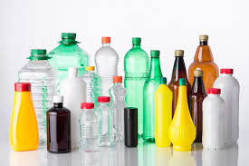

Jak chránit naši planetu s technologií

- Využívej ekologické technologie – elektrická auta, solární panely
- Podporuj udržitelné technologie v domácnosti, jako jsou tepelná čerpadla
- Používej online služby, které pomáhají šetřit papírem
Vítej!
Tohle je web kde se naučíš jak chránit naši planetu!
například:
můžeš vyrobit krásné výrobky pro ozdobu
například:
můžeš je použít k vytvoření květináčů nebo jiných dekorací
například:
to pomůže snížit množství plastových lahví, které se používají jednorázově